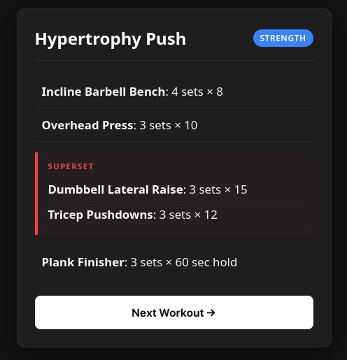
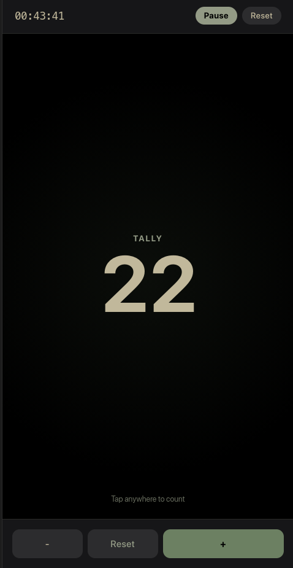
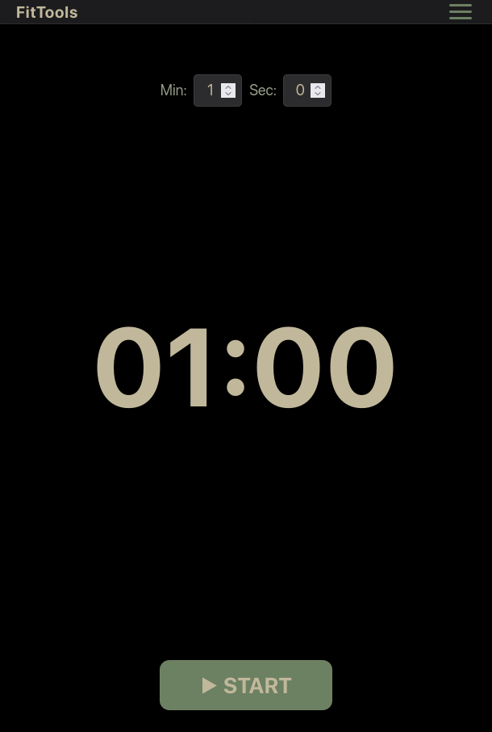
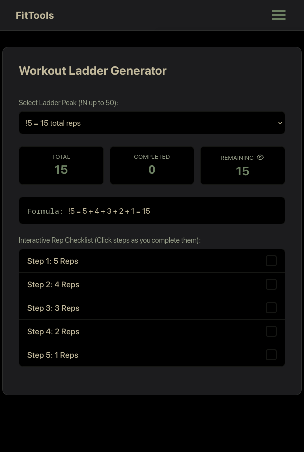
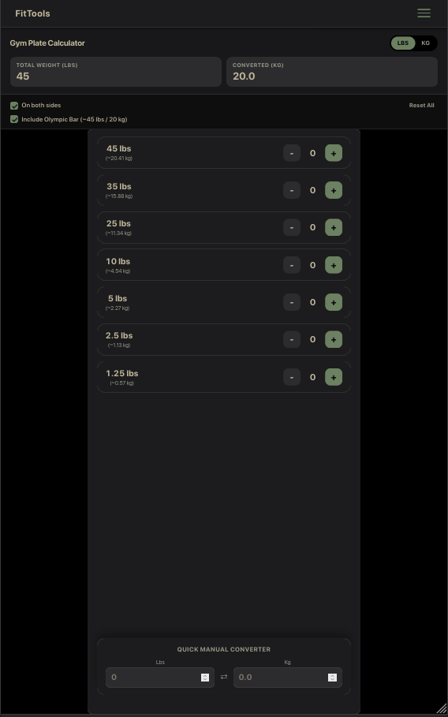
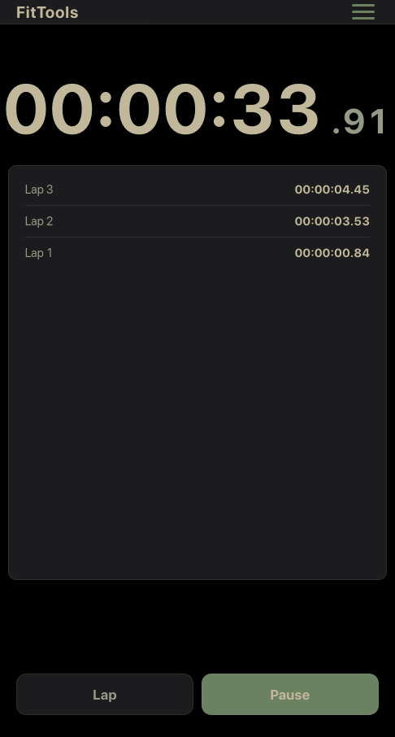
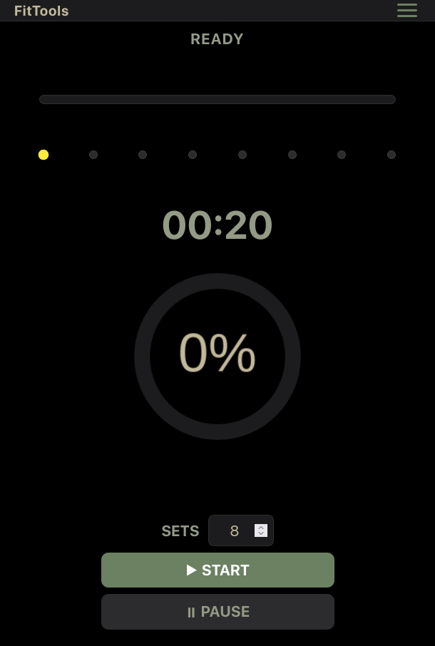
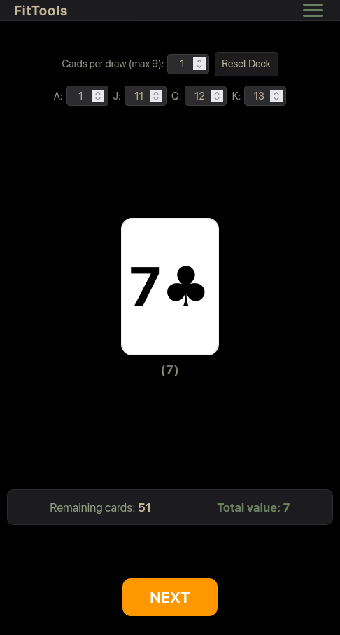

The Fitness App

The Goal
Design a fitness app that a fitness enthustiest would actually use. Most applications are created by people who don't workout, or people who don't understand code, so theirs often a gap in what's really needed.
Completed
Pending
Technologies Used
HTML CSS JavaScript KritaCurrent Status
Visual Documentation
The rough Draft

This is the base muscle anatomy for "Exercise by muscle" section

Musing Krita to Map out muscles and isolate them, since there is currently no free/open-source projects availble to do so.

Here, I overlaid all the highlighted images within a div. When a user clicks on specific hot-spot dots (mapped to individual muscles), the corresponding muscles light up

Here, A toggle button was included to switch between image sets for muscle mapping. The back is shown when the "Back" button is clicked

Handling how Super-Sets and Giant-Sets are displayed

It's a digital tally counter with an optional timer, designed for tracking reps, sets, or other gym activities when a simple counting tool is needed

A customizable timer allowing users to set specific rest periods between workout sets to help maintain focus and timing during your gym sessions.

A tool to generate workout ladders with a selectable peak, showing the total reps and providing an interactive checklist for each step

A gym plate calculator for determining total weight based on Olympic plates, including a convenient kilogram-to-pound converter

A digital stopwatch that tracks elapsed time and records individual lap splits, useful for timing workouts and various exercises.

A high-intensity interval training timer designed to maximize your workout efficiency with customizable work and rest intervals

A digital deck of cards designed for custom workouts, letting you set specific values for face cards without needing a physical deck
